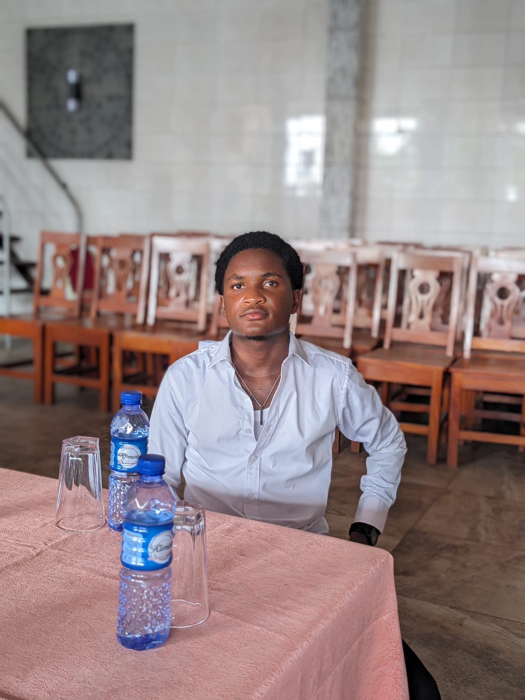

Je suis de nationalité togolaise-béninoise, je viens du Togo
et j'ai étudié les mathématiques à L'université de Lomé
dans la ville de
Je vis actuellement dans la ville de Lyon.
en France. J'étudie maintenant l'informatique à L'université Lumière Lyon2

Vous pouvez trouver
des exemples de pages que j'ai créé ici et ici.
Mon insta
Ma page Facebook Mon WhatsApp
Au revoir er à bientôt !